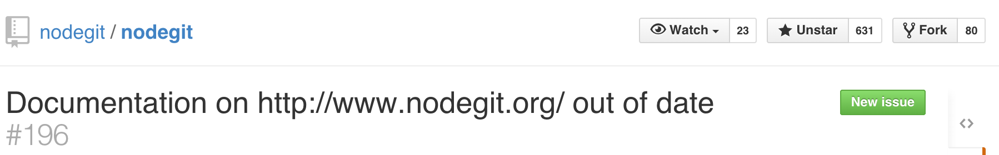
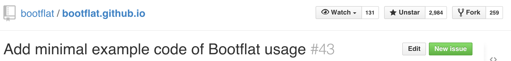
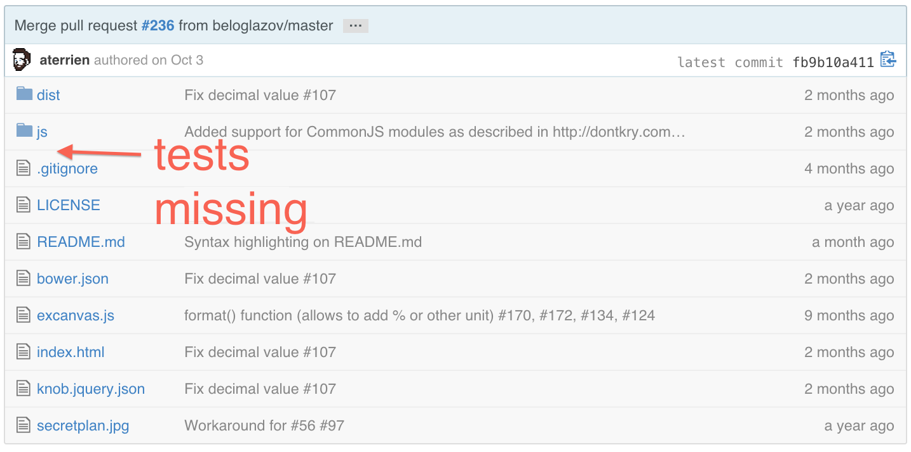
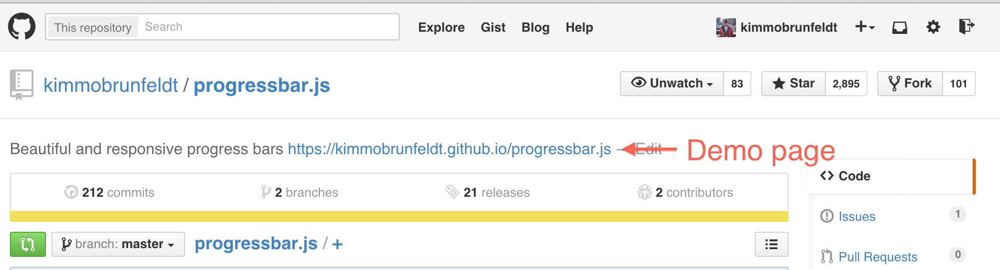
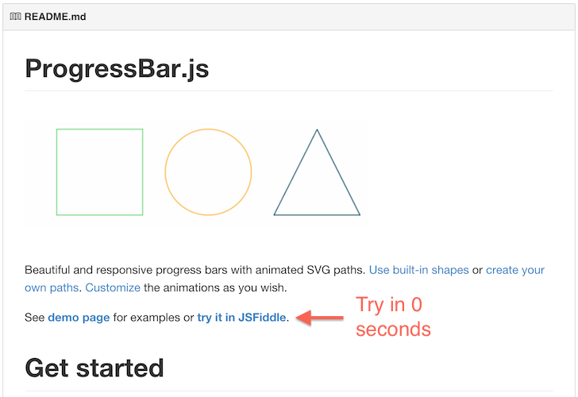
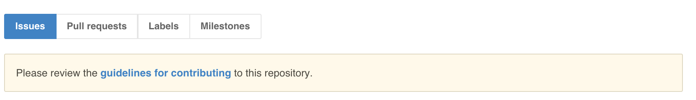
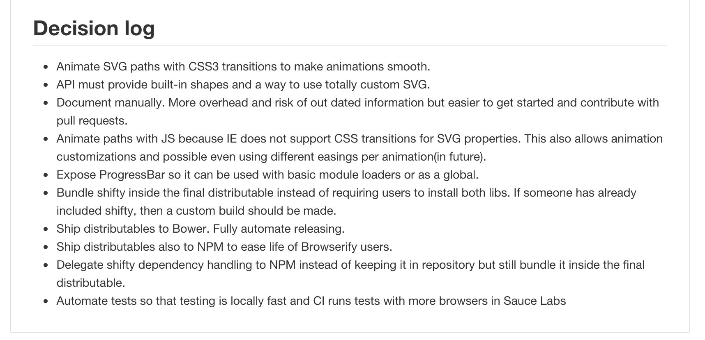
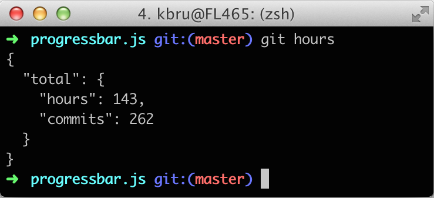
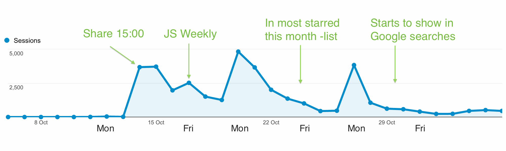

Getting Traction for an Open Source Project
Kimmo Brunfeldt, November/2015
ProgressBar.js has reached
- >120 countries
- 34 000 people
- 45 000 page views
- 2 900 stars in GitHub
Steps to a good project
- Solve an existing problem
- Gift wrap the solution
- Share it at the right time to the correct channels
- Maintain it
Solve an existing problem
Problems with current solutions
- Depends on jQuery (the usual)
- No animation support
- Weird API
- It was made 10 years ago
- It looks like it was made 10 years ago
Lousy documentation?

Lack of examples?

No tests?
Gift wrap it
Show your thing
Make it easy
Help contributors
Document everything
Gift wrapping takes time
(That's 20 working days)
Share it at the right time to the correct channels
I shared on Tuesday 15:00
Why was it good?
- Colleagues share before leaving work
- Lot of people in EU & US see it inside 24h
- Traction before JavaScript Weekly letter on Friday
Traffic
Where to share
- Friends and colleagues
- Hacker News
- Popular news letter (JavaScript Weekly)
- Popular blog authors (DailyJS, Tympanus)
Direct ninja marketing
- Answer to StackOverflow
- Comment on related blog posts
- Open issue to GitHub project